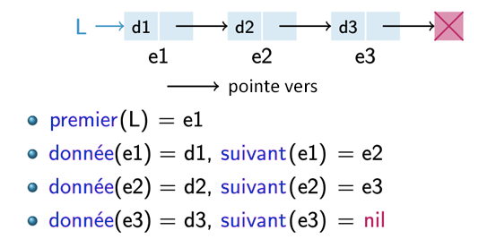
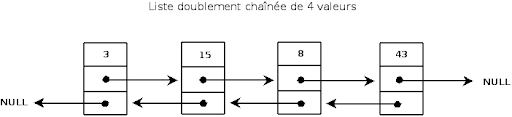

Une liste chaînée est une structure de données qui permet de stocker une collection d’éléments de manière
dynamique en mémoire. De façon imagée, l'ensemble des cellules ressemble à une chaîne dont les maillons seraient les cellules.
Contrairement à un tableau, les éléments ne sont pas stockés de façon contiguë en mémoire.
Chaque élément de la liste, appelé cellule(ou nœud), est composé de :
une donnée
(par exemple un entier, un réel, un caractère, une structure, etc.)
un pointeur vers la cellule suivante de la liste chaînée
(et éventuellement un pointeur vers la cellule précédente dans le cas d’une liste doublement chaînée)
Les cellules sont ainsi reliées entre elles par des pointeurs, formant une chaîne.
La première cellule est appelée la tête de la liste.
La dernière cellule ne pointe vers aucune autre cellule
(NULL en langage C, par exemple), ce qui indique la fin de la liste.
Représentation d'une liste chainée simplement chainée
Par exemple, en C, la structure d’une liste doublement chaînée
contenant des entiers peut être définie comme:
typedef struct cellule {
int element; // valeur stockée dans la cellule
struct cellule* suivant; // pointeur vers la cellule suivante
struct cellule* precedent; // pointeur vers la cellule précédente
} *Liste;
Ou encore l'implémentation d'une liste simplement chainée dans le langage Python:
class Liste:
def __init__(self, val):
self.valeur = val # valeur stockée dans la cellule
self.suivant = None # pointeur vers la cellule suivante
Les deux types de liste chainées
Les listes chaînées permettent de stocker une collection d’éléments de différentes manières.
En effet, il existe plusieurs représentations des listes chaînées, chacune ayant ses avantages et ses inconvénients
selon les opérations à effectuer. C’est ce que nous allons découvrir dans cette section.
1. Liste simplement chainée
Un des types de listes chaînées est la liste chaînée simple.
Il s’agit de l’une des représentations les plus simples des listes chaînées.
Dans cette représentation, chaque cellule contient une donnée d’un certain type
ainsi qu’un pointeur vers la cellule suivante.
La liste est représentée par un pointeur vers la première cellule, appelée la
tête de la liste.

Exemple de liste simplement chainée de trois valeurs
Sur cet exemple, on remarque que la structure de la liste chaînée simple est bien respectée.
La liste chaînée représente une collection de trois éléments :
La première cellule contient l’élément d1 et pointe vers la cellule e2.
La deuxième cellule contient l’élément d2 et pointe vers la cellule e3.
La dernière cellule contient l’élément d3 et ne pointe vers aucune cellule (NULL).
On remarque que, comme chaque cellule ne possède qu’un seul pointeur, l’accès aux éléments se fait
uniquement dans un seul sens. Ainsi, l’accès à une valeur peut être long lorsque la liste contient
un grand nombre d’éléments, car il est nécessaire de parcourir la liste depuis le début.
2. Liste doublement chainée
Un autre type de liste chaînée est la liste doublement chaînée.
Dans cette représentation, chaque cellule contient une donnée d’un certain type,
ainsi qu’un pointeur vers la cellule suivante.
La principale différence avec une liste simplement chaînée est que chaque cellule
possède également un pointeur vers la cellule précédente.
Ainsi, l’accès aux éléments peut se faire aussi bien de successeur en successeur
que de prédécesseur en prédécesseur.

Exemple de liste doublement chainée de quatre valeurs
Sur cet exemple, on remarque que la structure de la liste doublement chaînée est bien respectée.
La liste contient une collection de trois éléments :
La première cellule contient l’élément 42, son successeur est -7 et son prédécesseur est NULL (car c’est le début de la liste).
La deuxième cellule contient l’élément -7, son successeur est 9 et son prédécesseur est 42.
La dernière cellule contient l’élément 9, son successeur est NULL (car c’est la fin de la liste) et son prédécesseur est -7.
On remarque que chaque cellule possède deux pointeurs.
Cela permet de réduire certains coûts d’accès, notamment lors des parcours ou des suppressions,
car il est possible de naviguer dans les deux sens.
En revanche, cette structure est plus coûteuse en mémoire en raison de l’ajout d’un pointeur supplémentaire
et nécessite également un plus grand nombre d’instructions lors des manipulations.
Avantages et inconvénients
Les deux types de listes chaînées présentent chacun des avantages et des inconvénients :
Type de liste chainée
Avantages
Inconvénients
Liste simplement chainée
Structure simple à comprendre et à implémenter.
Économie de mémoire.
Insertion et suppression d’éléments faciles, surtout au début ou au milieu de la liste.
Accès aux éléments uniquement dans un sens.
Pas de navigation vers l’élément précédent.
Parcours long pour accéder à une valeur en fin de liste.
Liste doublement chainée
Navigation dans les deux sens possible.
Insertion et suppression d’éléments plus flexibles et rapides.
Parcours plus efficace pour certaines opérations.
Chaque cellule utilise plus de mémoire.
Structure plus complexe à gérer.
Plus d’instructions nécessaires pour les opérations.

 Vers accueil
Vers accueil